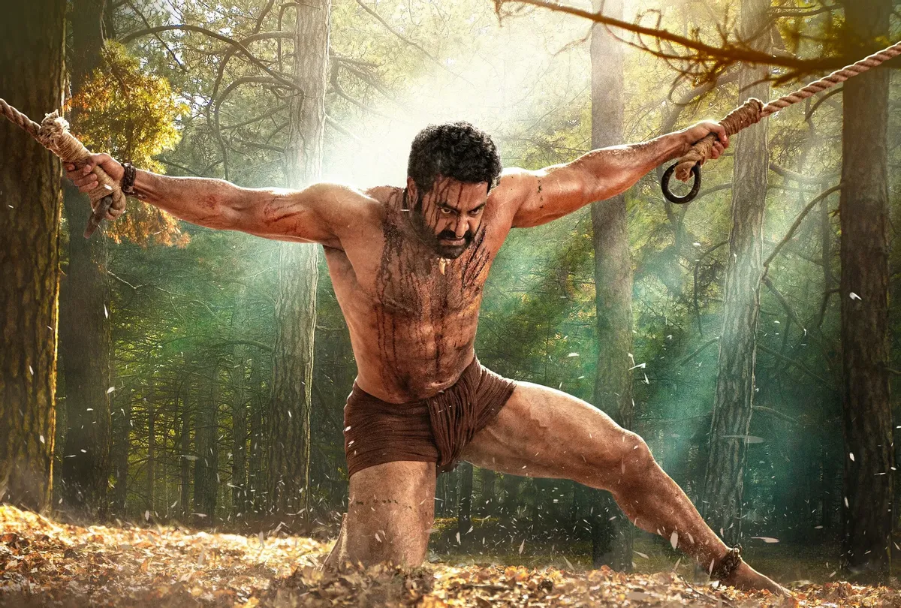

I am Nitesh Chandra Bellamkonda.I'm Currently pursuing my masters in Applied Computer Science
I have completed my undergraduation in Information Technology
RRR is a 2022 Indian Telugu-language epic action drama film directed by S. S. Rajamouli, who wrote the film with V. Vijayendra Prasad.It centers on two real-life Indian revolutionaries, Alluri Sitarama Raju (Charan) and Komaram Bheem (Rama Rao), and their fight against the British Raj. Set in 1920, the plot explores the undocumented period in their lives when both the revolutionaries chose to go into obscurity before they began the fight for their country.
